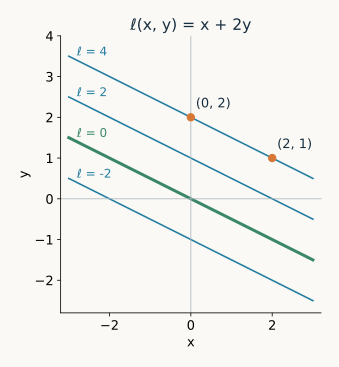
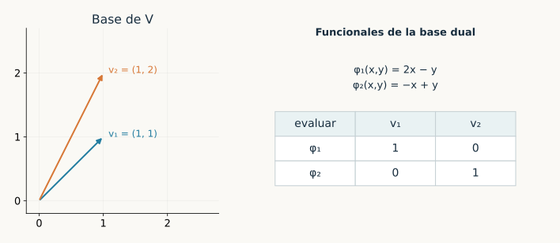
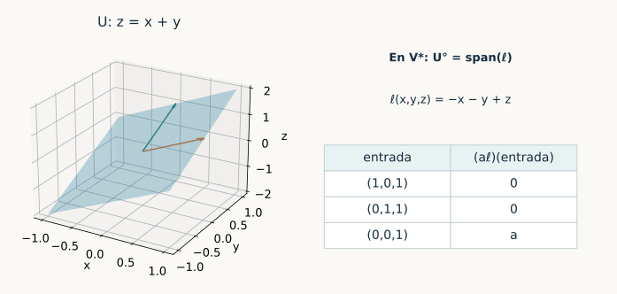
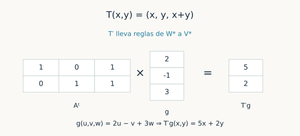
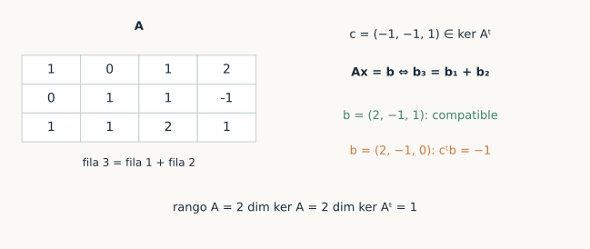
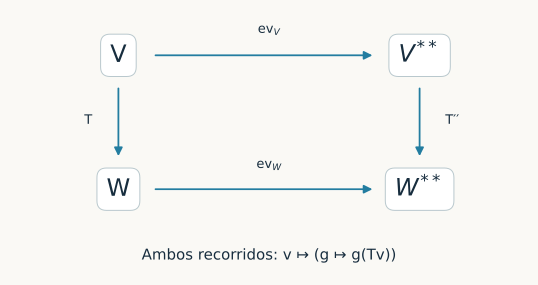

Capítulo 19. Espacio dual y transposición
Álgebra para matemáticos · Tomo II
← Capítulo 18 · Índice del tomo II · Obra completa · Capítulo 20 →
La regla \(\ell(x,y)=x+2y\) asigna un número a cada vector del plano. Los vectores \((2,1)\) y \((0,2)\) producen la misma salida, cuatro, porque su diferencia \((2,-1)\) queda anulada por la regla. Si conocemos solamente esa salida, distinguimos unas rectas paralelas de otras, pero perdemos la posición dentro de cada recta. Una ecuación lineal puede verse así como una medición que conserva cierta información del vector y descarta otra.
Hemos usado reglas de esta clase desde los primeros sistemas de ecuaciones. Cada fila de una matriz toma las coordenadas de una entrada y produce una coordenada de su imagen. También extraer un coeficiente de un polinomio, evaluarlo en un punto o tomar la traza de una matriz son aplicaciones lineales con salida escalar. Reunir esas aplicaciones en un espacio permitirá estudiar qué información separa vectores, qué ecuaciones definen un subespacio y cómo se transporta una medición a través de una transformación.

Salvo indicación expresa, los espacios serán de dimensión finita sobre un cuerpo conmutativo \(\mathbb F\). Se utilizan la extensión de bases de C07, las aplicaciones lineales de C08, rango–nulidad de C09, los cocientes de C11 y las matrices de C12. La transposición algebraica no requiere producto interno; sobre \(\mathbb C\) se mantendrá la linealidad compleja, sin introducir conjugaciones. El caso de dimensión cero se incluye con bases vacías.
19.1. Aplicaciones con salida escalar
Definición 19.1. Un funcional lineal sobre \(V\) es una aplicación lineal \(f:V\to\mathbb F\). El espacio dual algebraico es \(V^*=\operatorname{Hom}_{\mathbb F}(V,\mathbb F)\), con las operaciones puntuales \((f+g)(v)=f(v)+g(v)\) y \((af)(v)=af(v)\).
Las operaciones son las de C08 para espacios de aplicaciones lineales; en particular, una combinación lineal de funcionales vuelve a ser un funcional. La palabra «algebraico» indica que se incluyen todos los funcionales lineales. No hay una topología ni una condición adicional de continuidad en esta definición.
En \(\mathbb F^n\), cada funcional tiene la forma \(f(x_1,\ldots,x_n)=a_1x_1+\cdots+a_nx_n\). En efecto, basta escribir \(x=\sum_jx_je_j\) y aplicar linealidad: necesariamente \(a_j=f(e_j)\). La fila \((a_1,\ldots,a_n)\) representa esa aplicación en las bases usuales. La aplicación y la fila pertenecen a categorías distintas de objetos: una recibe vectores, la otra registra sus coeficientes después de haber fijado coordenadas.
Para el espacio \(\mathcal P_2(\mathbb F)\) de polinomios formales de grado a lo sumo dos, las reglas \(c_j(a_0+a_1t+a_2t^2)=a_j\) son funcionales. Para cualquier \(a\in\mathbb F\), la evaluación \(E_a(p)=p(a)\) también lo es. Ninguno de estos ejemplos necesita cálculo. Sobre \(\mathbb C\), la regla \(z\mapsto\overline z\) no es un funcional complejo: su valor en \(i\) es \(-i\), mientras la linealidad compleja exigiría \(i\) veces su valor en uno, que sería \(i\).
19.2. La base que lee coordenadas
Fijemos una base ordenada \(\mathcal B=(v_1,\ldots,v_n)\). La unicidad de las coordenadas permite definir una aplicación \(\varphi_i\) que a cada vector le asigna su coordenada \(i\). Sumar vectores o multiplicarlos por escalares realiza esas mismas operaciones sobre sus coordenadas, de modo que cada \(\varphi_i\) es lineal.
Definición 19.2. La base dual de \(\mathcal B\) es la lista \(\mathcal B^*=(\varphi_1,\ldots,\varphi_n)\) caracterizada por \(\varphi_i(v_j)=\delta_{ij}\), donde \(\delta_{ij}\) vale uno si \(i=j\) y cero en caso contrario.
Teorema 19.1 (base dual y reconstrucción). La lista \(\mathcal B^*\) es una base de \(V^*\) y es la única con los valores prescritos. Además,
\[ v=\sum_{i=1}^n\varphi_i(v)v_i,\qquad f=\sum_{i=1}^nf(v_i)\varphi_i. \]
En particular, \(\dim V^*=\dim V\).
Demostración. Si \(v=\sum_jx_jv_j\), aplicar un funcional con los valores prescritos da \(\sum_jx_j\delta_{ij}=x_i\). Por ello necesariamente es el funcional coordenada ya construido y la primera identidad queda probada. Para la segunda, aplicar \(f\) a la primera da \(f(v)=\sum_i\varphi_i(v)f(v_i)\) para toda entrada \(v\), que es la igualdad de funcionales anunciada. Así la lista dual genera \(V^*\).
Si \(\sum_i a_i\varphi_i=0\), evaluar en \(v_j\) da \(a_j=0\) para cada \(j\). La lista es independiente y, por tanto, una base de longitud \(n\). La demostración incluye \(n=0\): sólo existe el funcional cero sobre el espacio cero. \(\square\)
Las dos fórmulas reconstruyen objetos diferentes. Los números \(\varphi_i(v)\) reconstruyen un vector en la base \(\mathcal B\); los números \(f(v_i)\) reconstruyen un funcional en la base \(\mathcal B^*\). Para evaluar después, se multiplican esas dos listas y se suman sus productos.
Tomemos en \(\mathbb R^2\) los vectores \(v_1=(1,1)\) y \(v_2=(1,2)\). Resolver \((x,y)=a(1,1)+b(1,2)\) da \(a=2x-y\) y \(b=-x+y\). Por tanto, la base dual es \(\varphi_1(x,y)=2x-y\), \(\varphi_2(x,y)=-x+y\). Para \(f(x,y)=x+2y\), los coeficientes duales son \(f(v_1)=3\) y \(f(v_2)=5\): en efecto, \(3\varphi_1+5\varphi_2=x+2y\).

Proposición 19.2 (cambio de base dual). Sean \(\mathcal B=(v_i)\) y \(\mathcal C=(w_j)\) bases de \(V\), y sea \(P\) la matriz cuyas columnas son \([w_j]_{\mathcal B}\), de modo que \([v]_{\mathcal B}=P[v]_{\mathcal C}\). Si \(\mathcal B^*=(\varphi_i)\) y \(\mathcal C^*=(\psi_j)\), entonces
\[ \psi_j=\sum_i(P^{-1})_{ji}\varphi_i,\qquad [f]_{\mathcal C^*}=P^{\mathsf T}[f]_{\mathcal B^*}. \]
Las columnas de coordenadas de los propios \(\psi_j\) en \(\mathcal B^*\) forman \(P^{-\mathsf T}=(P^{-1})^{\mathsf T}\).
Demostración. La igualdad \([v]_{\mathcal C}=P^{-1}[v]_{\mathcal B}\) dice que la coordenada \(j\) nueva es la fila \(j\) de \(P^{-1}\) aplicada a las coordenadas antiguas. Esto prueba la primera fórmula. Si \(c_i=f(v_i)\), entonces \(f(w_j)=\sum_iP_{ij}f(v_i)=\sum_iP_{ij}c_i\), que es la coordenada \(j\) de \(P^{\mathsf T}c\). Finalmente, el coeficiente de \(\varphi_i\) en \(\psi_j\) es \((P^{-1})_{ji}\); colocarlo en la fila \(i\), columna \(j\), da la matriz \(P^{-\mathsf T}\). \(\square\)
No hay conflicto entre las dos transpuestas: una fórmula cambia las coordenadas de un funcional fijo; la otra registra los funcionales de la nueva base en la antigua. En el ejemplo, \(P=\begin{pmatrix}1&1\\1&2\end{pmatrix}\), y sus filas inversas son \((2,-1)\) y \((-1,1)\). La columna \((1,2)\) de coeficientes usuales de \(f\) se convierte en \((3,5)\) mediante \(P^{\mathsf T}\).
19.3. Extender una regla y separar un vector
Un funcional definido sólo en un subespacio prescribe una parte de una medición. En dimensión finita podemos completarla: fijamos sus valores en una base del subespacio y elegimos los que faltan al ampliar esa base. La elección adicional será importante al interpretar los cocientes.
Lema 19.3 (extensión, separación e hiperplanos). Todo funcional sobre un subespacio \(U\subseteq V\) se extiende a un funcional sobre \(V\). Si \(v\notin U\), existe \(f\in V^*\) tal que \(f|_U=0\) y \(f(v)=1\). Los núcleos de funcionales no nulos son exactamente los hiperplanos, es decir, los subespacios de codimensión uno. Dos funcionales no nulos tienen el mismo núcleo si y sólo si uno es un múltiplo escalar no nulo del otro.
Demostración. Elijamos una base de \(U\) y ampliémosla a una de \(V\). A los primeros vectores asignamos los valores del funcional dado, y a los restantes valores arbitrarios. C08 garantiza una única aplicación lineal con esos valores; coincide con la original en una base de \(U\) y, por tanto, en todo \(U\).
Si \(v\notin U\), añadirlo a una base de \(U\) conserva la independencia. Podemos incluirlo al ampliar la base, asignarle valor uno, asignar cero a la base de \(U\) y, por ejemplo, cero a los demás vectores añadidos. Esto da el separador.
Un funcional no nulo tiene imagen igual a \(\mathbb F\), pues su imagen es un subespacio no nulo de un espacio de dimensión uno. Rango–nulidad da codimensión uno para su núcleo. Recíprocamente, si \(U\) tiene codimensión uno, una base suya se completa con un único vector; el funcional cero en la primera y uno en ese vector tiene núcleo exactamente \(U\).
Sean por último \(f,g\ne0\) con el mismo núcleo. Elijamos \(u\) con \(f(u)=1\). Para todo \(v\), el vector \(v-f(v)u\) pertenece a \(\ker f=\ker g\), luego \(g(v)=g(u)f(v)\). Además \(g(u)\ne0\) porque \(u\) no pertenece al núcleo común. La recíproca es inmediata al multiplicar por un escalar no nulo. \(\square\)
El núcleo fija la dirección de los niveles, pero no su escala. Los funcionales \(x+2y\) y \(3x+6y\) anulan la misma recta; sus salidas en cada vector difieren por el factor tres. Por otra parte, un funcional dado sobre una recta del plano admite muchas extensiones: su valor en una dirección complementaria queda libre.
19.4. Las ecuaciones que anulan un subespacio
Definición 19.3. Para un subconjunto \(S\subseteq V\), su anulador es \(S^\circ=\{f\in V^*:f(s)=0\text{ para todo }s\in S\}\). Para \(L\subseteq V^*\), escribiremos \(L_0=\{v\in V:f(v)=0\text{ para todo }f\in L\}\) y lo llamaremos su preanulador.
Ambos conjuntos son subespacios: las condiciones de anulación se conservan al sumar y multiplicar por escalares. Además, \(S^\circ=(\operatorname{span}S)^\circ\). Es importante conservar el espacio ambiente: \(U^\circ\) está en \(V^*\), mientras \((U^\circ)_0\) está en \(V\). El símbolo \(\circ\) no representa aquí ortogonalidad para un producto interno.
Teorema 19.4 (dimensión y recuperación). Si \(U\subseteq V\) es un subespacio, entonces
\[ \dim U^\circ=\dim V-\dim U,\qquad (U^\circ)_0=U. \]
En particular, los anuladores determinan los subespacios y revierten sus inclusiones: \(U\subseteq W\) si y sólo si \(W^\circ\subseteq U^\circ\).
Demostración. Extendamos una base \((v_1,\ldots,v_k)\) de \(U\) a una base \((v_1,\ldots,v_n)\) de \(V\). Por 19.1, un funcional tiene expansión \(f=\sum_i f(v_i)\varphi_i\). Anula \(U\) exactamente cuando los primeros \(k\) coeficientes son cero. Por tanto, \((\varphi_{k+1},\ldots,\varphi_n)\) es una base de \(U^\circ\), que da la dimensión.
Cada elemento de \(U\) queda anulado por todos los elementos de \(U^\circ\), luego \(U\subseteq(U^\circ)_0\). Si \(v\notin U\), el separador de 19.3 pertenece a \(U^\circ\) y toma valor uno en \(v\), así que \(v\notin(U^\circ)_0\). Esto prueba la igualdad. La inclusión \(U\subseteq W\) implica directamente \(W^\circ\subseteq U^\circ\). Para la recíproca, si todos los funcionales que anulan \(W\) anulan también \(U\), entonces \(U\subseteq(W^\circ)_0=W\). \(\square\)
Para \(U=\{(x,y,z):z=x+y\}\subseteq\mathbb R^3\), el funcional \(\ell(x,y,z)=-x-y+z\) anula el plano y es no nulo. El anulador tiene dimensión uno, de modo que \(U^\circ=\operatorname{span}\ell\). Describir un plano por dos generadores o por una ecuación son dos maneras de fijar la misma información. Para un subespacio de dimensión \(k\) en dimensión \(n\), una base de su anulador da exactamente \(n-k\) ecuaciones independientes.

Proposición 19.5 (sumas e intersecciones). Para subespacios \(U,W\subseteq V\),
\[ (U+W)^\circ=U^\circ\cap W^\circ,\qquad (U\cap W)^\circ=U^\circ+W^\circ. \]
Demostración. Un funcional anula toda suma \(u+w\) exactamente cuando anula ambos sumandos; basta tomar uno de ellos cero para una dirección, y usar linealidad para la otra. Esto prueba la primera igualdad.
Cada suma de un funcional que anula \(U\) y otro que anula \(W\) anula \(U\cap W\), de modo que \(U^\circ+W^\circ\subseteq(U\cap W)^\circ\). Para demostrar que no falta nada, pongamos \(n=\dim V\) y usemos Grassmann, la primera igualdad y 19.4:
\[ \begin{aligned} \dim(U^\circ+W^\circ) &=(n-\dim U)+(n-\dim W)-\dim(U+W)^\circ\\ &=n-\dim U-\dim W+\dim(U+W)\\ &=n-\dim(U\cap W)=\dim(U\cap W)^\circ. \end{aligned} \]
La inclusión entre subespacios de igual dimensión es una igualdad. \(\square\)
19.5. Transportar una medición hacia la entrada
Sea \(T:V\to W\) lineal y sea \(g:W\to\mathbb F\) un funcional. Si primero aplicamos \(T\) y después medimos con \(g\), obtenemos sobre \(V\) el funcional \(v\mapsto g(Tv)\). La transformación envía vectores hacia \(W\); la composición permite traer las mediciones desde \(W\) hasta \(V\).
Definición 19.4. La aplicación dual, o transpuesta algebraica, de \(T:V\to W\) es \(T':W^*\to V^*\), definida por \(T'g=g\circ T\). El apóstrofo indica dualidad, no derivación. Se reserva \(T^*\) para la notación de adjuntos cuando se introduzcan productos internos.
Proposición 19.6 (linealidad y orden de composición). La aplicación \(T'\) es lineal. Para aplicaciones lineales del mismo dominio y codominio, \((aS+bT)'=aS'+bT'\). Si \(T:V\to W\) y \(S:W\to X\), entonces \((S\circ T)'=T'\circ S'\). Además, \(I_V'=I_{V^*}\) y, si \(T\) es un isomorfismo, \((T^{-1})'=(T')^{-1}\).
Demostración. La composición \(g\circ T\) es lineal, así que pertenece a \(V^*\). Para \(g,h\in W^*\), evaluar en \(v\) da \(T'(ag+bh)(v)=ag(Tv)+bh(Tv)\), que prueba la linealidad de \(T'\). Para la dependencia respecto de \(T\), la linealidad de \(g\) da \(g(aSv+bTv)=ag(Sv)+bg(Tv)\); las dos aplicaciones duales coinciden en cada funcional y en cada entrada.
Si \(h\in X^*\), entonces \((S\circ T)'h=h\circ S\circ T=T'(S'h)\). El orden se invierte porque primero hay que traer \(h\) de \(X\) a \(W\) y después de \(W\) a \(V\). La identidad se verifica componiendo con \(I_V\). Finalmente, dualizar \(T^{-1}T=I_V\) y \(TT^{-1}=I_W\) muestra que \((T^{-1})'\) es una inversa de \(T'\) en ambos órdenes. \(\square\)
Para \(T(x,y)=(x,y,x+y)\) y \(g(u,v,w)=2u-v+3w\), la regla trasladada es \(T'g(x,y)=5x+2y\). Esta medición en el plano conserva exactamente la salida que se habría obtenido midiendo la imagen en el espacio tridimensional.

19.6. Por qué aparece una matriz transpuesta
Teorema 19.7 (matriz de la aplicación dual). Si \(A=[T]_{\mathcal C\leftarrow\mathcal B}\), donde \(\mathcal B\) es base de \(V\) y \(\mathcal C\) base de \(W\), entonces
\[ [T']_{\mathcal B^*\leftarrow\mathcal C^*}=A^{\mathsf T}. \]
Demostración. Escribamos \(\mathcal B=(v_i)\), \(\mathcal C=(w_j)\) y sus bases duales \((\varphi_i)\) y \((\psi_j)\). El coeficiente de \(\varphi_i\) en \(T'\psi_j\) es, por 19.1, su valor en \(v_i\). Ese valor es \(\psi_j(Tv_i)\). Como \(Tv_i=\sum_kA_{ki}w_k\), resulta \(\psi_j(Tv_i)=A_{ji}\). Así la entrada de fila \(i\), columna \(j\) de la matriz dual es \(A_{ji}\), exactamente la entrada de \(A^{\mathsf T}\). \(\square\)
Si \(\dim V=n\) y \(\dim W=m\), la matriz \(A\) tiene tamaño \(m\times n\) y la dual tiene tamaño \(n\times m\). La fórmula exige las bases duales correspondientes. Con bases arbitrarias e independientes de \(V^*\) y \(W^*\) habrá que añadir cambios de base; transponer una tabla no elimina esa dependencia.
Para el ejemplo anterior,
\[ A=\begin{pmatrix}1&0\\0&1\\1&1\end{pmatrix},\qquad A^{\mathsf T}=\begin{pmatrix}1&0&1\\0&1&1\end{pmatrix}. \]
La columna \((2,-1,3)\) representa \(g\) en la base dual usual de \(\mathbb R^3\). Multiplicarla por \(A^{\mathsf T}\) da \((5,2)\), que representa \(T'g\). Sobre \(\mathbb C\) se realiza el mismo cálculo sin conjugaciones. Para \(T(z)=iz\), el dual envía \(g(z)=az\) al funcional \(z\mapsto ai z\); la matriz es \((i)\), no \((-i)\).
La regla \((ST)'=T'S'\) recupera \((BA)^{\mathsf T}=A^{\mathsf T}B^{\mathsf T}\). La inversión del orden matricial expresa la inversión del recorrido de las mediciones.
19.7. Núcleos, imágenes y compatibilidad
Teorema 19.8 (núcleo e imagen del dual). Para \(T:V\to W\),
\[ \ker T'=(\operatorname{im}T)^\circ,\qquad \operatorname{im}T'=(\ker T)^\circ,\qquad \operatorname{rg}T'=\operatorname{rg}T. \]
En consecuencia, \(T\) es sobreyectiva si y sólo si \(T'\) es inyectiva, y \(T\) es inyectiva si y sólo si \(T'\) es sobreyectiva.
Demostración. La condición \(T'g=0\) significa \(g(Tv)=0\) para toda entrada \(v\); equivale a que \(g\) anule la imagen de \(T\). Esto prueba la primera igualdad.
Si \(f=T'g\), entonces \(f(v)=g(Tv)=0\) cuando \(v\in\ker T\), lo que da una inclusión para la segunda. Recíprocamente, sea \(f\in(\ker T)^\circ\). Definamos sobre \(\operatorname{im}T\) la regla \(h(Tv)=f(v)\). Está bien definida: si \(Tv=Tv'\), la diferencia \(v-v'\) está en el núcleo y \(f(v)=f(v')\). La regla es lineal al elegir preimágenes de sumas y múltiplos. Extendamos \(h\) a \(g\in W^*\) mediante 19.3. Entonces \(T'g(v)=g(Tv)=f(v)\) para todo \(v\), y \(f\) pertenece a la imagen dual.
Por 19.4, esa imagen tiene dimensión \(\dim V-\dim\ker T=\operatorname{rg}T\). La primera igualdad muestra que \(T'\) tiene núcleo cero exactamente cuando la imagen de \(T\) es todo \(W\). La segunda muestra que \(T'\) tiene imagen todo \(V^*\) exactamente cuando \(\ker T=0\). Aquí se usan los casos extremos del anulador en 19.4. \(\square\)
Aplicando 19.7 a una matriz rectangular, recuperamos \(\operatorname{rg}A^{\mathsf T}=\operatorname{rg}A\). Las filas de \(A\) generan los funcionales obtenidos como combinaciones de las coordenadas de la salida. El teorema dice que son precisamente todos los funcionales que anulan el núcleo de \(A\). Esto explica por qué las ecuaciones de un sistema homogéneo determinan el mismo subespacio aunque se reemplacen por otra base del espacio de filas.
Corolario 19.9 (criterio dual de compatibilidad). Para \(A\in\mathbb F^{m\times n}\) y \(b\in\mathbb F^m\), el sistema \(Ax=b\) tiene solución si y sólo si \(c^{\mathsf T}b=0\) para todo \(c\in\ker A^{\mathsf T}\). Si es incompatible, existe tal \(c\) con \(c^{\mathsf T}b=1\).
Demostración. Si \(b=Ax\) y \(A^{\mathsf T}c=0\), entonces \(c^{\mathsf T}b=c^{\mathsf T}Ax=0\). Si \(b\notin\operatorname{im}A\), el lema 19.3 da un funcional sobre \(\mathbb F^m\) que anula esa imagen y toma valor uno en \(b\). En las coordenadas duales usuales tiene forma \(y\mapsto c^{\mathsf T}y\). Anular la imagen significa \(A^{\mathsf T}c=0\), y su valor en \(b\) da el certificado anunciado. \(\square\)
Consideremos
\[ A=\begin{pmatrix}1&0&1&2\\0&1&1&-1\\1&1&2&1\end{pmatrix}. \]
Las dos primeras filas son independientes y la tercera es su suma. Por ello \(\ker A^{\mathsf T}\) está generado por \(c=(-1,-1,1)\) y la compatibilidad equivale a \(b_3=b_1+b_2\). Si se cumple, todas las soluciones son \((b_1-s-2t,b_2-s+t,s,t)\), con \(s,t\in\mathbb F\). El núcleo tiene base \((-1,-1,1,0)\) y \((-2,1,0,1)\); su anulador está generado por los funcionales de las dos primeras filas. En esta cuenta se ven las dos igualdades de 19.8 y la libertad de una fibra de C09.

19.8. Los funcionales de un cociente
Una regla sobre clases \(v+U\) sólo puede depender de la clase, por lo que debe ignorar diferencias que estén en \(U\). Esa exigencia identifica el dual del cociente con el anulador. En cambio, restringir un funcional a \(U\) olvida sus valores en las direcciones complementarias.
Teorema 19.10 (cociente y exactitud elemental). Sean \(i:U\to V\) la inclusión y \(q:V\to V/U\) la proyección. La aplicación \(q':(V/U)^*\to V^*\) es inyectiva y tiene imagen \(U^\circ\). La aplicación \(i':V^*\to U^*\) es la restricción, es sobreyectiva y tiene núcleo \(U^\circ\). Así se obtiene
\[ 0\longrightarrow(V/U)^*\xrightarrow{q'}V^*\xrightarrow{i'}U^*\longrightarrow0. \]
La secuencia es exacta: en cada lugar, la imagen de la flecha anterior es el núcleo de la siguiente. En particular, \((V/U)^*\cong U^\circ\) mediante \(q'\) y \(V^*/U^\circ\cong U^*\) mediante restricción.
Demostración. Si \(h\circ q=0\), la sobreyectividad de \(q\) implica \(h=0\), así que \(q'\) es inyectiva. Toda composición \(h\circ q\) anula \(U\). A la inversa, si \(f\) anula \(U\), la fórmula \(h(v+U)=f(v)\) está bien definida porque cambiar un representante añade un elemento anulado por \(f\). Es lineal por las operaciones del cociente y satisface \(q'h=f\). Esto identifica exactamente su imagen.
Por definición, \(i'f=f|_U\). El lema 19.3 garantiza sobreyectividad, y la condición de restricción cero es precisamente \(f\in U^\circ\). Las flechas con cero significan inyectividad en el primer extremo y sobreyectividad en el último; la igualdad en el centro es la ya probada. La primera identificación es el isomorfismo de \(q'\) con su imagen. La segunda se obtiene del primer teorema de isomorfía de C11 aplicado a la restricción. \(\square\)
Las extensiones de un funcional fijo \(h\in U^*\) forman una familia \(f_0+U^\circ\), una vez elegida una extensión \(f_0\). En efecto, dos extensiones tienen la misma restricción si y sólo si su diferencia anula \(U\). Elegir un complemento de \(U\) permite imponer valores cero allí y obtener una extensión concreta. El anulador y las dos aplicaciones del teorema no necesitan ese complemento; la selección de una extensión sí puede depender de él.
19.9. Evaluar un funcional en un vector fijo
El bidual es \(V^{**}=(V^*)^*\). Sus elementos reciben funcionales y devuelven escalares. Un vector fijo \(v\in V\) produce una regla de esa clase: entregar a cada funcional \(f\) su valor \(f(v)\). La entrada de esta nueva regla es \(f\), mientras \(v\) permanece fijo.
Teorema 19.11 (evaluación bidual). La aplicación
\[ \operatorname{ev}_V:V\longrightarrow V^{**},\qquad \operatorname{ev}_V(v)(f)=f(v), \]
es un isomorfismo. Además, para toda \(T:V\to W\) se cumple \(T''\operatorname{ev}_V=\operatorname{ev}_W T\), donde \(T''=(T')':V^{**}\to W^{**}\).
Demostración. Para un \(v\) fijo, la regla es lineal en \(f\): \((af+bg)(v)=af(v)+bg(v)\). Así \(\operatorname{ev}_V(v)\in V^{**}\). Para \(f\) fijo, la linealidad \(f(av+bw)=af(v)+bf(w)\) muestra que \(\operatorname{ev}_V\) es lineal como aplicación de \(v\).
Si \(v\ne0\), el separador de 19.3 aplicado al subespacio cero proporciona \(f\) con \(f(v)=1\). Por ello \(\operatorname{ev}_V(v)\ne0\), y la evaluación es inyectiva. La dimensión de \(V^{**}\) es \(\dim V^*=\dim V\) por 19.1; la inyectividad implica sobreyectividad en dimensión finita.
Para la identidad restante, evaluemos ambos lados en un funcional \(g\in W^*\). El lado izquierdo vale \(\operatorname{ev}_V(v)(T'g)=(T'g)(v)=g(Tv)\). El derecho vale \(\operatorname{ev}_W(Tv)(g)=g(Tv)\). Son elementos de \(W^{**}\) con los mismos valores en cada entrada y, por tanto, iguales. \(\square\)
La evaluación se define sin elegir una base. Esa propiedad se conserva al aplicar cualquier transformación, como expresa la última identidad, y da un sentido preciso a llamar canónica a esta identificación con el bidual. Un isomorfismo con \(V^*\) obtenido enviando una base a su base dual depende, en cambio, de la base elegida. En el plano usual enviaría \((1,1)\) al funcional \(x+y\); usando la base de §19.2 lo enviaría a \(2x-y\). Son dos elecciones distintas para el mismo vector.

Corolario 19.12 (recuperación desde el lado dual). Para un subespacio \(L\subseteq V^*\),
\[ \dim L_0=\dim V-\dim L,\qquad (L_0)^\circ=L. \]
Por tanto, \(U\mapsto U^\circ\) y \(L\mapsto L_0\) son correspondencias inversas entre los subespacios de \(V\) y de \(V^*\), que revierten inclusiones.
Demostración. Aplicando 19.4 al espacio \(V^*\), el anulador de \(L\) dentro de \(V^{**}\) tiene dimensión \(\dim V^*-\dim L\). Bajo \(\operatorname{ev}_V\), sus elementos corresponden exactamente a los \(v\) tales que \(f(v)=0\) para todo \(f\in L\), es decir, a \(L_0\). Esto prueba la fórmula de dimensión.
Cada \(f\in L\) anula \(L_0\), de modo que \(L\subseteq(L_0)^\circ\). Por 19.4, el segundo espacio tiene dimensión \(\dim V-\dim L_0=\dim L\); la inclusión es igualdad. Junto con \((U^\circ)_0=U\), esto prueba que las dos operaciones son inversas. Ambas revierten inclusiones por sus propias condiciones de anulación. \(\square\)
19.10. Invariancia y transposición de operadores
Proposición 19.13 (subespacios invariantes y anuladores). Para un operador \(T:V\to V\) y un subespacio \(U\subseteq V\), se tiene \(T(U)\subseteq U\) si y sólo si \(T'(U^\circ)\subseteq U^\circ\).
Demostración. Si \(T(U)\subseteq U\), para \(f\in U^\circ\) y \(u\in U\) resulta \((T'f)(u)=f(Tu)=0\). Por ello \(T'f\in U^\circ\). Recíprocamente, supongamos invariante el anulador. Para todo \(u\in U\) y \(f\in U^\circ\), se tiene \(f(Tu)=(T'f)(u)=0\). Así \(Tu\) pertenece a \((U^\circ)_0=U\) por 19.4, que prueba la invariancia. \(\square\)
En una base adaptada a \(U\), C17 da \([T]=\begin{pmatrix}B&C\\0&D\end{pmatrix}\). La base dual tiene como últimos vectores una base de \(U^\circ\). La matriz transpuesta es \(\begin{pmatrix}B^{\mathsf T}&0\\C^{\mathsf T}&D^{\mathsf T}\end{pmatrix}\) y preserva precisamente el subespacio generado por esos últimos vectores. Su restricción a \(U^\circ\) tiene matriz \(D^{\mathsf T}\). Esto coincide con dualizar el operador cociente sobre \(V/U\), cuya matriz era \(D\).
Proposición 19.14 (invariantes de un operador y su dual). Los operadores \(T\) y \(T'\) tienen el mismo característico y el mismo mínimo. Para todo \(\lambda\in\mathbb F\) y \(j\geq0\),
\[ \dim\ker(T'-\lambda I)^j=\dim\ker(T-\lambda I)^j. \]
Si el característico se escinde, tienen los mismos tamaños de bloques de Jordan para cada valor propio. En particular, una matriz con característico escindido es semejante a su transpuesta.
Demostración. Por 19.7 y la invariancia del determinante bajo transposición de C13, \(\det(tI-A^{\mathsf T})=\det(tI-A)\). Para todo polinomio \(p\), la linealidad de la dualización y su regla de composición dan \(p(T)'=p(T')\): invertir el orden no cambia una potencia de un mismo operador. Una aplicación \(S\) es cero si y sólo si \(S'\) es cero. Una dirección es inmediata; para la otra, si \(Sv\ne0\), algún funcional separador toma valor uno en \(Sv\), por lo que \(S'\) no es cero. Así \(p(T)=0\) si y sólo si \(p(T')=0\), y los mínimos coinciden.
Aplicar la igualdad de rangos de 19.8 a \(S=(T-\lambda I)^j\) da igualdad de rangos con \(S'=(T'-\lambda I)^j\). Como los dos espacios tienen igual dimensión, rango–nulidad da las nulidades anunciadas. Si el característico se escinde, C18 recupera de ellas los tamaños de cada valor y clasifica por semejanza. \(\square\)
La hipótesis de escisión corresponde aquí al alcance del argumento por Jordan. Los resultados de rango, característico, mínimo y nulidades anteriores se probaron sobre cualquier cuerpo. La transposición de un bloque superior de Jordan también se puede convertir en el mismo bloque invirtiendo el orden de sus vectores; esa observación será útil en los ejercicios.
19.11. Ejercicios y soluciones
En las fórmulas de coordenadas, los funcionales se representan por columnas de coeficientes en una base dual; su evaluación sobre una columna de coordenadas se escribe \(c^{\mathsf T}x\). No se conjugan escalares complejos. Los ejemplos numéricos se toman sobre \(\mathbb Q\) o \(\mathbb R\) salvo indicación distinta.
Ejercicio 19.1. Determine cuáles de las reglas \(x+2y\), \(x+2y+1\) y \(xy\) sobre \(\mathbb R^2\) son funcionales lineales.
Solución 1. La primera respeta sumas y múltiplos al distribuir sus dos términos, luego es lineal. La segunda toma valor uno en el vector cero, lo que impide linealidad. La tercera vale cero en \((1,0)\) y \((0,1)\), pero vale uno en su suma \((1,1)\); falla la aditividad. Tener salida escalar no basta para ser un funcional lineal.
Ejercicio 19.2. Encuentre la base dual de \(((1,1),(1,2))\) y reconstruya \((3,4)\) con ella.
Solución 2. Resolver \((x,y)=a(1,1)+b(1,2)\) da \(a=2x-y\) y \(b=-x+y\). Así \(\varphi_1=2x-y\) y \(\varphi_2=-x+y\). Evaluarlas en \((3,4)\) da dos y uno, respectivamente. Por tanto \((3,4)=2(1,1)+(1,2)\). Las evaluaciones en los dos vectores de la base dan las columnas \((1,0)\) y \((0,1)\), que verifican la condición dual.
Ejercicio 19.3. Calcule la base dual de \(\mathcal B=((1,0,0),(1,1,0),(0,1,1))\).
Solución 3. La matriz de columnas de la base y su inversa son \[ P=\begin{pmatrix}1&1&0\\0&1&1\\0&0&1\end{pmatrix},\qquad P^{-1}=\begin{pmatrix}1&-1&1\\0&1&-1\\0&0&1\end{pmatrix}. \] Las filas inversas dan \(\varphi_1(x,y,z)=x-y+z\), \(\varphi_2(x,y,z)=y-z\) y \(\varphi_3(x,y,z)=z\). Evaluar cada fila en las columnas de \(P\) produce la identidad, así que la lista es la base dual en el orden pedido.
Ejercicio 19.4. Exprese \(f(x,y,z)=2x-y+3z\) en la base dual del ejercicio 3.
Solución 4. Los coeficientes son los valores en la base original: \(f(1,0,0)=2\), \(f(1,1,0)=1\) y \(f(0,1,1)=2\). Por ello \(f=2\varphi_1+\varphi_2+2\varphi_3\). Sustituir las fórmulas da \(2(x-y+z)+(y-z)+2z=2x-y+3z\), que verifica el resultado sin invertir de nuevo una matriz.
Ejercicio 19.5. Para \(f(x,y)=4x-y\), calcule sus coordenadas duales en la base del ejercicio 2 usando el cambio de base.
Solución 5. Las coordenadas usuales son la columna \((4,-1)\). Para \(P=\begin{pmatrix}1&1\\1&2\end{pmatrix}\), la fórmula da \(P^{\mathsf T}(4,-1)=(3,2)\). También \(f(1,1)=3\) y \(f(1,2)=2\). Finalmente \(3(2x-y)+2(-x+y)=4x-y\). Aquí se usa \(P^{\mathsf T}\) para cambiar los coeficientes de un funcional fijo; las filas de \(P^{-1}\) construyen la base dual misma.
Ejercicio 19.6. Identifique la base dual de \((1,t,t^2)\) en \(\mathcal P_2(\mathbb F)\) y escriba \(E_a\) en ella.
Solución 6. Los funcionales coordenada son \(c_0,c_1,c_2\), que extraen cada coeficiente: \(c_i(t^j)=\delta_{ij}\). Para \(p=a_0+a_1t+a_2t^2\), evaluar en \(a\) da \(a_0+aa_1+a^2a_2\). Así \(E_a=c_0+ac_1+a^2c_2\). Es una identidad sobre cualquier cuerpo, pues usa polinomios formales y evaluación algebraica.
Ejercicio 19.7. Pruebe sobre \(\mathbb Q\) que \(E_0,E_1,E_2\) forman una base de \(\mathcal P_2(\mathbb Q)^*\) y encuentre la base de polinomios de la que son duales.
Solución 7. Considere \(L_0=(t-1)(t-2)/2\), \(L_1=-t(t-2)\) y \(L_2=t(t-1)/2\). Sus valores en \(0,1,2\) forman la identidad: \(E_i(L_j)=\delta_{ij}\). Por ello los tres polinomios son independientes, pues evaluar una relación en esos puntos anula cada coeficiente. Son una base de un espacio de dimensión tres. Los funcionales de evaluación son su base dual por 19.1. En particular, cada \(p\) se reconstruye como \(p(0)L_0+p(1)L_1+p(2)L_2\).
Ejercicio 19.8. ¿Pueden las evaluaciones en puntos de \(\mathbb F_2\) generar todo el dual de \(\mathcal P_2(\mathbb F_2)\)?
Solución 8. No. Sólo hay dos puntos y, por tanto, dos funcionales de evaluación, mientras el dual tiene dimensión tres. Además el polinomio formal no nulo \(t^2+t\) se anula en ambos puntos; todas las combinaciones de evaluaciones lo anulan. El funcional que extrae el coeficiente de \(t^2\) toma valor uno en él y no pertenece a ese espacio generado. La distinción entre polinomios formales y sus funciones sobre un cuerpo finito importa aquí.
Ejercicio 19.9. Pruebe que la traza es un funcional no nulo sobre \(M_n(\mathbb F)\) para \(n\geq1\), y determine la dimensión de su núcleo incluso cuando la característica divide a \(n\).
Solución 9. La suma de las entradas diagonales respeta las operaciones matriciales, de modo que la traza es lineal. La matriz unidad \(E_{11}\) tiene traza uno, así que el funcional no es cero sobre ningún cuerpo. Su rango es uno y su núcleo tiene dimensión \(n^2-1\). Aunque \(\operatorname{tr}I_n=n\) pueda ser cero en el cuerpo, eso no anula el funcional completo.
Ejercicio 19.10. Encuentre todos los funcionales no nulos sobre \(\mathbb R^2\) cuyo núcleo sea \(x+2y=0\), y normalice uno para que tome valor uno en \((1,0)\).
Solución 10. El lema 19.3 dice que son \(f(x,y)=a(x+2y)\) con \(a\ne0\). También se deduce escribiendo un funcional general \(bx+cy\) y exigiendo que anule \((2,-1)\): resulta \(2b-c=0\). La normalización \(f(1,0)=1\) fuerza \(a=1\), así que el funcional normalizado es \(x+2y\).
Ejercicio 19.11. Sea \(U=\operatorname{span}((1,1,0),(0,1,1))\). Encuentre todas las extensiones del funcional \(h\) que toma valores uno y dos en esos generadores, respectivamente.
Solución 11. Los generadores son independientes y los datos definen un funcional sobre \(U\). Una extensión \(f(x,y,z)=\alpha x+\beta y+\gamma z\) debe cumplir \(\alpha+\beta=1\) y \(\beta+\gamma=2\). Tomando \(\beta=a\), todas son \(f=(1-a)x+ay+(2-a)z\), con \(a\in\mathbb F\). La diferencia de dos elecciones es un múltiplo de \(-x+y-z\), que anula ambos generadores. La libertad de las extensiones tiene dimensión uno.
Ejercicio 19.12. Para el subespacio del ejercicio 11, construya un separador que tome valor uno en \(e_2\).
Solución 12. El funcional \(\ell(x,y,z)=-x+y-z\) anula \((1,1,0)\) y \((0,1,1)\), luego anula todo \(U\). En cambio, \(\ell(e_2)=1\). Esto prueba a la vez que \(e_2\notin U\) y que \(\ell\) es el separador pedido. Su coeficiente de \(y\) fija la normalización, y las condiciones sobre los dos generadores determinan los otros coeficientes.
Ejercicio 19.13. Calcule el anulador del plano \(z=x+y\) y recupere el plano como preanulador.
Solución 13. Un funcional \(ax+by+cz\) anula todos los vectores \((x,y,x+y)\) si y sólo si \((a+c)x+(b+c)y=0\) para todo \(x,y\). Esto obliga a \(a=b=-c\). El anulador es la recta generada por \(-x-y+z\). Su preanulador es el conjunto donde esa regla vale cero, es decir, el plano original. Se comprueba \(\dim U+\dim U^\circ=2+1=3\).
Ejercicio 19.14. Halle el anulador de \(U=\operatorname{span}((1,0,1,0),(0,1,0,1))\subseteq\mathbb F^4\).
Solución 14. Para \(f(x)=\sum_i a_ix_i\), las condiciones son \(a_1+a_3=0\) y \(a_2+a_4=0\). Por tanto \(U^\circ=\operatorname{span}(x_1-x_3,x_2-x_4)\). Estos dos funcionales son independientes por sus coeficientes de \(x_1,x_2\). Su núcleo común exige \(x_1=x_3\) y \(x_2=x_4\), que describe exactamente \(U\). El cálculo funciona también en característica dos, interpretando allí los signos.
Ejercicio 19.15. Verifique las dos identidades de 19.5 para \(U=\operatorname{span}(e_1,e_2)\) y \(W=\operatorname{span}(e_2,e_3)\) en \(\mathbb F^3\).
Solución 15. Se tiene \(U+W=\mathbb F^3\) y \(U\cap W=\operatorname{span}e_2\). Sus anuladores son \(U^\circ=\operatorname{span}z\) y \(W^\circ=\operatorname{span}x\), entendiendo \(x,z\) como funcionales coordenada. La intersección de estas rectas duales es cero, que coincide con \((U+W)^\circ\). Su suma es \(\operatorname{span}(x,z)\), el conjunto de funcionales que anula \(e_2\), y coincide con \((U\cap W)^\circ\).
Ejercicio 19.16. Demuestre que si dos subespacios propios distintos tienen la misma dimensión, existe un funcional que anula uno de ellos y no anula el otro.
Solución 16. Sean \(U\ne W\) de igual dimensión. No puede ocurrir \(W\subseteq U\), porque una inclusión entre espacios de igual dimensión sería igualdad. Elija \(w\in W\setminus U\). El separador de 19.3 anula \(U\) y toma valor uno en \(w\), así que no anula todo \(W\). En particular, los anuladores de \(U\) y \(W\) son distintos. No es necesario construir coordenadas de ambos espacios.
Ejercicio 19.17. Si \(f_1,\ldots,f_k\) son funcionales independientes en un espacio de dimensión \(n\), pruebe que su núcleo común tiene dimensión \(n-k\).
Solución 17. El espacio \(L=\operatorname{span}(f_1,\ldots,f_k)\) tiene dimensión \(k\). Su preanulador es exactamente \(\bigcap_i\ker f_i\), porque anular los generadores equivale a anular todas sus combinaciones. El corolario 19.12 da \(\dim L_0=n-k\). Para una familia dependiente, la misma cuenta usa \(\dim L\) en lugar del número de funcionales escritos.
Ejercicio 19.18. ¿Son el anulador \(U^\circ\) y el dual \(U^*\) el mismo espacio? Use una recta de \(\mathbb F^3\) para explicar la diferencia.
Solución 18. No. Para \(U=\operatorname{span}e_1\), su dual \(U^*\) tiene dimensión uno y contiene aplicaciones definidas sólo sobre esa recta. Su anulador en \((\mathbb F^3)^*\) tiene dimensión dos y consta de reglas \(by+cz\) definidas en todo el espacio que valen cero en la recta. La restricción de cualquier elemento del anulador es el funcional cero de \(U^*\); identificar ambos objetos perdería tanto sus dominios como sus dimensiones.
Ejercicio 19.19. Para \(T(x,y,z)=(x+z,2x-y)\), calcule \(T'\) y su matriz en bases duales usuales.
Solución 19. Sea \(g(u,v)=au+bv\). Entonces \(T'g(x,y,z)=a(x+z)+b(2x-y)=(a+2b)x-by+az\). La columna de salida es \((a+2b,-b,a)\), y la matriz es \[ \begin{pmatrix}1&2\\0&-1\\1&0\end{pmatrix} =\begin{pmatrix}1&0&1\\2&-1&0\end{pmatrix}^{\mathsf T}. \] La entrada de \(T'\) es un funcional sobre el espacio de salida de \(T\), no un vector del dominio original.
Ejercicio 19.20. Calcule los núcleos y las imágenes de \(T\) y \(T'\) en el ejercicio 19 y compruebe 19.8.
Solución 20. Las ecuaciones del núcleo de \(T\) dan \(z=-x\) y \(y=2x\), luego \(\ker T=\operatorname{span}(1,2,-1)\). Como las dos filas son independientes, \(T\) tiene imagen \(\mathbb F^2\). Por la fórmula de \(T'\), salida cero implica \(a=b=0\), de modo que su núcleo es cero. Su imagen consta de columnas \((c_1,c_2,c_3)\) con \(c_1+2c_2-c_3=0\): para ellas basta elegir \(a=c_3\) y \(b=-c_2\). Esa condición es exactamente anular \((1,2,-1)\). Ambas aplicaciones tienen rango dos, y el núcleo dual es el anulador de todo el codominio.
Ejercicio 19.21. Para \(T(x,y)=(x,y,x+y)\) y \(S(u,v,w)=(u+w,v-w)\), compruebe la inversión del orden de composición al dualizar.
Solución 21. Las matrices son \(A=\begin{pmatrix}1&0\\0&1\\1&1\end{pmatrix}\) y \(B=\begin{pmatrix}1&0&1\\0&1&-1\end{pmatrix}\). Su producto es \(BA=\begin{pmatrix}2&1\\-1&0\end{pmatrix}\). Por otro lado, \(A^{\mathsf T}B^{\mathsf T}=\begin{pmatrix}2&-1\\1&0\end{pmatrix}=(BA)^{\mathsf T}\). Las dimensiones también fijan el orden: primero \(S'\) lleva funcionales de \(\mathbb F^2\) a \((\mathbb F^3)^*\) y después \(T'\) los lleva al dual del plano inicial.
Ejercicio 19.22. Para la matriz de tres filas de §19.7, encuentre una base del espacio de filas, una de \(\ker A\) y una de \(\ker A^{\mathsf T}\).
Solución 22. Las dos primeras filas son independientes por sus primeras dos coordenadas, y la tercera es su suma; aquéllas son una base del espacio de filas. Resolver las dos primeras ecuaciones homogéneas con \(z=s,w=t\) da \((x,y,z,w)=s(-1,-1,1,0)+t(-2,1,0,1)\), una base del núcleo. La relación única entre las tres filas tiene coeficientes \((-1,-1,1)\), que generan \(\ker A^{\mathsf T}\). Las dimensiones son dos, dos y uno, respectivamente.
Ejercicio 19.23. Resuelva el sistema de §19.7 con \(b=(2,-1,1)\).
Solución 23. La condición \(b_3=b_1+b_2\) se cumple porque \(1=2-1\). Poniendo \(z=s,w=t\), las dos primeras ecuaciones dan \(x=2-s-2t\) e \(y=-1-s+t\). La tercera se satisface automáticamente por ser suma de las dos primeras. Todas las soluciones son \((2-s-2t,-1-s+t,s,t)\). La elección \(s=t=0\) produce la solución particular \((2,-1,0,0)\); los coeficientes de \(s,t\) son los generadores del núcleo del ejercicio 22.
Ejercicio 19.24. Pruebe la incompatibilidad para \(b=(2,-1,0)\) y dé un certificado normalizado con valor uno en \(b\).
Solución 24. La relación de filas exige \(0=2-1\), que es falsa sobre \(\mathbb Q\) o \(\mathbb R\). El vector \(c=(1,1,-1)\) pertenece a \(\ker A^{\mathsf T}\) porque fila 1 más fila 2 menos fila 3 es cero. Además \(c^{\mathsf T}b=2-1-0=1\). Si existiera solución, resultaría \(1=c^{\mathsf T}b=c^{\mathsf T}Ax=0\), contradicción. El funcional certificado impide la solución sin resolver para las cuatro incógnitas.
Ejercicio 19.25. Pruebe que un funcional sobre \(\mathbb F^n\) que se anula en \(\ker A\) es combinación lineal de las filas de \(A\).
Solución 25. Sea \(f\) tal funcional. Sobre \(\operatorname{im}A\), la regla \(h(Ax)=f(x)\) está bien definida porque dos preimágenes difieren en un elemento del núcleo. Extendiendo \(h\) a todo \(\mathbb F^m\), obtenemos una fila \(c^{\mathsf T}\) tal que \(f(x)=c^{\mathsf T}Ax\). Así la fila de coeficientes de \(f\) es \(c^{\mathsf T}A\), una combinación de las filas. Recíprocamente, cualquier combinación de filas se anula en el núcleo porque \(Ax=0\) allí.
Ejercicio 19.26. Demuestre directamente que una aplicación inyectiva \(T:V\to W\) tiene dual sobreyectiva.
Solución 26. Dado \(f\in V^*\), defina \(h\) sobre \(\operatorname{im}T\) por \(h(Tv)=f(v)\). La inyectividad hace única la preimagen y garantiza buena definición. La regla es lineal porque \(T\) respeta combinaciones. Extienda \(h\) a \(g\in W^*\) por extensión de una base. Entonces \(T'g=f\), así que todo funcional del dominio original está en la imagen dual. La extensión puede no ser única cuando la imagen de \(T\) es propia.
Ejercicio 19.27. Para \(U=\operatorname{span}(1,1)\subseteq\mathbb F^2\), describa todos los funcionales sobre \(V/U\) y la identificación con \(U^\circ\).
Solución 27. Cada clase de \((x,y)\) tiene representante \((x-y,0)\) al restarle \(y(1,1)\). El representante es único, porque \((a,0)\in U\) obliga a \(a=0\). Por tanto el cociente tiene base la clase de \((1,0)\) y sus funcionales son \(h_a((x,y)+U)=a(x-y)\). Al componer con \(q\), se obtiene \(q'h_a=a(x-y)\), precisamente el anulador de la recta. La fórmula es independiente del representante porque sumar \((t,t)\) no cambia \(x-y\).
Ejercicio 19.28. Encuentre todas las extensiones a \(\mathbb R^2\) del funcional sobre la recta \(U=\operatorname{span}(1,1)\) que toma valor tres en \((1,1)\).
Solución 28. Un funcional \(f(x,y)=ax+by\) tiene la restricción pedida exactamente cuando \(a+b=3\). Las extensiones son \(ax+(3-a)y\) para \(a\in\mathbb R\). Partiendo de \(f_0=3y\), la familia se escribe \(f_0+a(x-y)\); la dirección es \(U^\circ\). Si se elige como complemento el eje horizontal, imponer cero allí selecciona \(3y\). Si se elige el eje vertical, selecciona \(3x\). La diferencia de las extensiones sigue anulando \(U\).
Ejercicio 19.29. Escriba la secuencia exacta de 19.10 para \(U=\operatorname{span}(e_1,e_2)\subseteq\mathbb F^3\) usando coordenadas.
Solución 29. Identificando el cociente con la tercera coordenada, \(q(x,y,z)=z\). Su dual envía un escalar \(a\) al funcional \(az\), de columna \((0,0,a)\). La restricción envía \((b,c,d)\) a \((b,c)\), que son los valores sobre \(e_1,e_2\). Así la secuencia es \(0\to\mathbb F\to\mathbb F^3\to\mathbb F^2\to0\), con esas dos reglas. La primera es inyectiva, su imagen es la tercera recta coordenada, ésta es el núcleo de la segunda y la segunda es sobreyectiva. Eso verifica todos los lugares de exactitud.
Ejercicio 19.30. En una base \((v_1,v_2)\), un elemento \(L\in V^{**}\) está dado por \(L(f)=2f(v_1)-f(v_2)\). Encuentre el vector que lo representa por evaluación y pruebe su unicidad.
Solución 30. Por linealidad de \(f\), \(L(f)=f(2v_1-v_2)\) para todo \(f\). El vector es \(v=2v_1-v_2\). Si otro vector \(w\) diera los mismos valores, todos los funcionales anularían \(v-w\). La separación de 19.3 implica \(v-w=0\). Esto prueba unicidad directamente y coincide con la inyectividad de \(\operatorname{ev}_V\).
Ejercicio 19.31. Sea \(L\in\mathcal P_2(\mathbb Q)^{**}\) con \(L(E_0)=1\), \(L(E_1)=2\) y \(L(E_2)=5\). Determine el polinomio que representa \(L\).
Solución 31. El polinomio buscado debe tomar valores \(1,2,5\) en \(0,1,2\). Es \(p=1+t^2\), como se comprueba sustituyendo. Para demostrar que representa a \(L\) en todos los funcionales, use que \(E_0,E_1,E_2\) son una base del dual por el ejercicio 7. Las aplicaciones \(L\) y \(\operatorname{ev}(p)\) coinciden en los tres elementos de esa base, luego coinciden en todo el dual. La unicidad sigue de 19.11, o de que un polinomio de grado a lo sumo dos con tres raíces distintas es cero.
Ejercicio 19.32. Compare los isomorfismos \(V\to V^*\) que envían una base a su base dual para la base usual del plano y para la base del ejercicio 2.
Solución 32. En la base usual, el isomorfismo \(F\) envía \(e_1\) a \(x\) y \(e_2\) a \(y\), por lo que \(F(1,1)=x+y\). En la otra base, el isomorfismo \(G\) envía \(v_1=(1,1)\) a \(\varphi_1=2x-y\), así que \(G(1,1)=2x-y\). Estos funcionales son distintos, por ejemplo al evaluarlos en \((0,1)\) dan uno y menos uno. Cada regla depende de la base con que se construyó, a diferencia de \(v\mapsto(f\mapsto f(v))\).
Ejercicio 19.33. Compruebe la identidad de naturalidad de 19.11 para \(T(x,y)=(x,y,x+y)\), \(v=(1,2)\) y \(g(u,v,w)=2u-v+3w\).
Solución 33. La imagen del vector es \(Tv=(1,2,3)\) y \(g(Tv)=2-2+9=9\). La regla dual es \(T'g(x,y)=5x+2y\), que toma valor nueve en \((1,2)\). Por definición, evaluar \(T''\operatorname{ev}(v)\) en \(g\) da \(\operatorname{ev}(v)(T'g)=9\), y evaluar \(\operatorname{ev}(Tv)\) en \(g\) también da nueve. La misma cuenta para una regla arbitraria \(g\) constituye la identidad completa del teorema; este ejemplo verifica sus dos recorridos en datos concretos.
Ejercicio 19.34. Para \(L=\operatorname{span}(x+y,y+z)\subseteq(\mathbb F^3)^*\), calcule \(L_0\) y demuestre explícitamente que \((L_0)^\circ=L\).
Solución 34. Las dos ecuaciones dan \(y=-x\) y \(z=x\), por lo que \(L_0=\operatorname{span}(1,-1,1)\). Un funcional \(ax+by+cz\) anula esa recta si y sólo si \(a-b+c=0\), es decir, \(b=a+c\). En tal caso se escribe \(a(x+y)+c(y+z)\) y pertenece a \(L\). La recíproca se comprueba anulando el generador. La cuenta da dimensiones dos y uno y funciona en cualquier característica.
Ejercicio 19.35. Sea \(T\) de matriz \(\begin{pmatrix}2&1&0\\0&2&0\\0&0&3\end{pmatrix}\) y \(U=\operatorname{span}e_1\). Compruebe la invariancia de \(U\) y de \(U^\circ\).
Solución 35. Se tiene \(Te_1=2e_1\), así que \(U\) es invariante. Su anulador está generado por los funcionales \(y,z\). El dual envía una columna \((a,b,c)\) a \((2a,a+2b,3c)\), por transposición. Si \(a=0\), la primera coordenada de salida sigue siendo cero, luego \(U^\circ\) es invariante. La restricción a ese anulador tiene matriz \(\operatorname{diag}(2,3)\), que es la transpuesta del operador cociente en las clases de \(e_2,e_3\).
Ejercicio 19.36. Pruebe que para \(f\ne0\), el hiperplano \(\ker f\) es invariante bajo \(T\) si y sólo si \(T'f=\lambda f\) para algún escalar \(\lambda\).
Solución 36. Si \(T'f=\lambda f\), entonces para \(u\in\ker f\) resulta \(f(Tu)=\lambda f(u)=0\), así que el núcleo es invariante. Recíprocamente, elija \(v\) con \(f(v)=1\). Para cualquier \(x\), la diferencia \(x-f(x)v\) está en el núcleo; su imagen por \(T\) también está allí. Aplicar \(f\) da \(f(Tx)=f(x)f(Tv)\). Por ello \(T'f=\lambda f\) con \(\lambda=f(Tv)\). El escalar puede ser cero; no se ha supuesto que \(T\) sea invertible.
Ejercicio 19.37. Sea \(R_s\) la matriz que invierte el orden de la base usual. Pruebe \(R_s^{-1}J_s(\lambda)^{\mathsf T}R_s=J_s(\lambda)\).
Solución 37. Se cumple \(R_s^{-1}=R_s\), pues invertir dos veces devuelve cada vector a su lugar. La parte escalar \(\lambda I\) permanece fija. En la parte nilpotente transpuesta hay un uno en cada posición \((i+1,i)\). La inversión de filas y columnas lleva esa posición a \((s-i,s+1-i)\), que está una posición por encima de la diagonal. Esas son exactamente todas las posiciones de los unos de \(U_s\). Sumando la parte escalar se obtiene la identidad sobre cualquier cuerpo.
Ejercicio 19.38. Pruebe que \(A\) es diagonalizable sobre \(\mathbb F\) si y sólo si \(A^{\mathsf T}\) lo es, sin suponer de antemano que el característico se escinde.
Solución 38. Por C16, la diagonalización equivale a que el mínimo sea producto de factores lineales distintos sobre el cuerpo. La proposición 19.14 prueba que \(A\) y su transpuesta tienen el mismo mínimo sin exigir escisión previa. Por tanto cumplen a la vez ese criterio. También puede transponerse directamente \(A=PDP^{-1}\) para obtener \(A^{\mathsf T}=(P^{-1})^{\mathsf T}DP^{\mathsf T}\), y la recíproca se obtiene transponiendo de nuevo.
Ejercicio 19.39. Demuestre que todo funcional \(F\) sobre \(M_n(\mathbb F)\) tiene una expresión única \(F(A)=\operatorname{tr}(BA)\) con \(B\in M_n(\mathbb F)\).
Solución 39. Las matrices unidad \(E_{ij}\) forman una base. Defina \(B\) mediante \(B_{ji}=F(E_{ij})\). La identidad \(\operatorname{tr}(BE_{ij})=B_{ji}\) muestra que el funcional \(A\mapsto\operatorname{tr}(BA)\) coincide con \(F\) en cada elemento de esa base y, por linealidad, en toda matriz. Si dos matrices dieran el mismo funcional, evaluar en cada \(E_{ij}\) igualaría sus entradas \(ji\), así que serían iguales. No se ha introducido conjugación ni una positividad; la fórmula es válida en toda característica.
Ejercicio 19.40. Como contraste con la dimensión finita, describa el dual algebraico de \(\mathbb F[t]\) mediante sucesiones y explique por qué los extractores de coeficientes no forman una base de ese dual.
Solución 40. Un funcional queda determinado por la sucesión arbitraria \(a_j=f(t^j)\), \(j\geq0\). Recíprocamente, cualquier sucesión define \(f(\sum_{j=0}^m c_jt^j)=\sum_{j=0}^m c_ja_j\); la suma es finita para cada entrada y da un funcional lineal. Esto identifica el dual con todas las sucesiones de escalares, con operaciones término a término. El extractor de coeficiente \(c_j\) corresponde a la sucesión con un uno en la posición \(j\) y ceros en las otras. Sus combinaciones lineales finitas sólo dan sucesiones con soporte finito. La evaluación en uno corresponde a \((1,1,1,\ldots)\) y no está en ese espacio generado. La prueba finita de base dual no se traslada a una lista infinita de extractores.
Lecturas y referencias
Hoffman–Kunze, Linear Algebra, §§3.5–3.7, organiza la relación entre funcionales, anuladores, bidual y transposición. Axler, Linear Algebra Done Right, §3F, desarrolla el núcleo y la imagen de la aplicación dual y recupera la igualdad de rangos. Friedberg–Insel–Spence, Linear Algebra, §2.6, ofrece cálculos de bases duales y de la matriz transpuesta. Johnston, Advanced Linear and Matrix Algebra, §1.3.2, distingue la representación dependiente de una base de la evaluación bidual canónica.
← Capítulo 18 · Índice del tomo II · Obra completa · Capítulo 20 →